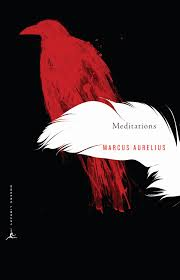
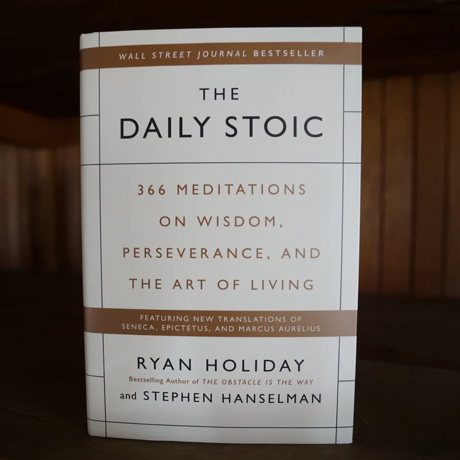
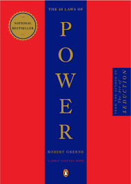

1. Meditations by Marcus Aurelius

This timeless collection of reflections by the Roman Emperor Marcus
Aurelius offers profound insights into Stoicism, self-discipline, and
living a virtuous life. It’s a guiding light for introspection and
resilience.
2. The Daily Stoic by Ryan Holiday

Ryan Holiday provides daily meditations that are rooted in Stoic
philosophy. This book combines ancient wisdom with practical lessons,
making it a perfect companion for cultivating mindfulness and clarity
in everyday life.
3. The 48 Laws of Power by Robert Greene

A compelling guide to understanding power dynamics and strategies for
achieving success. Robert Greene’s work combines historical anecdotes
with actionable advice, making it a must-read for navigating
relationships and leadership.